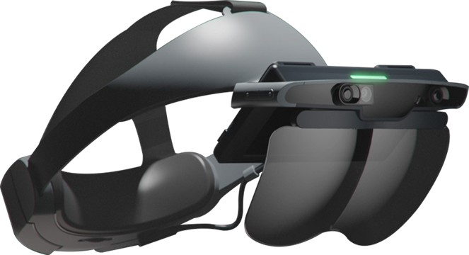
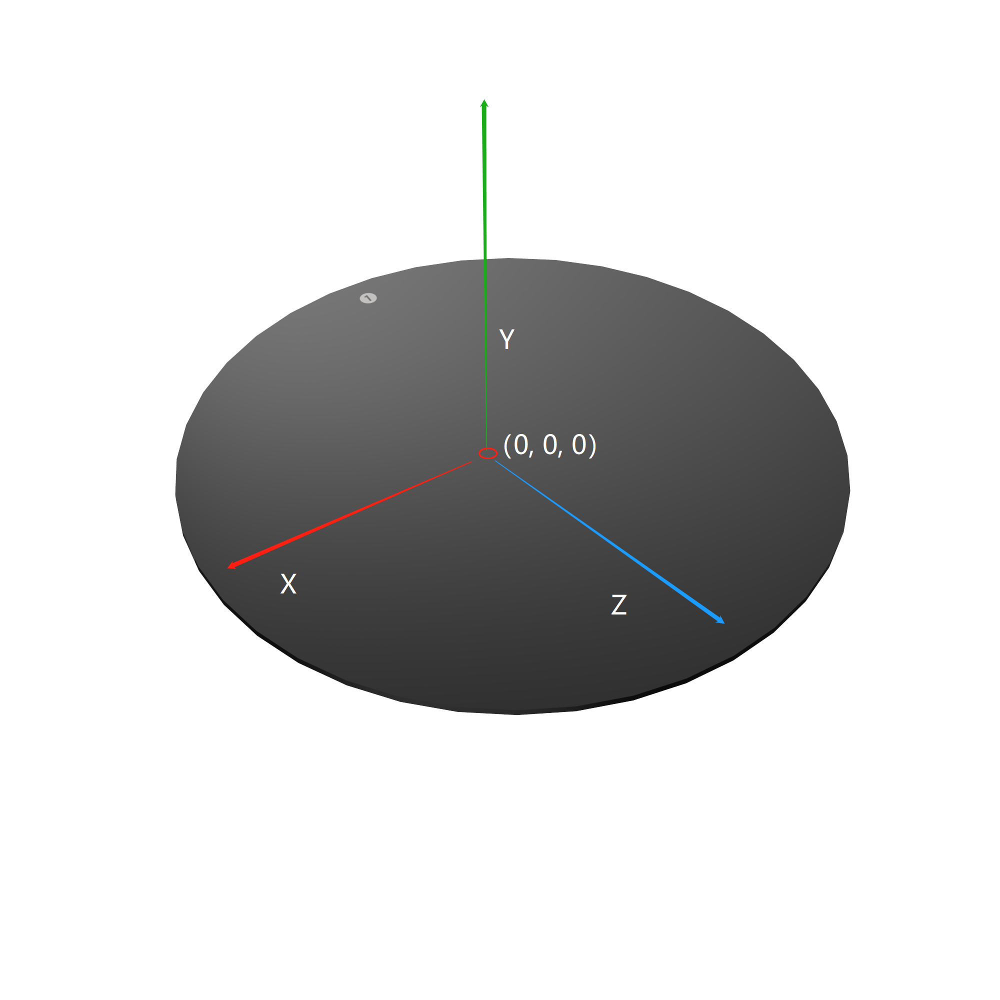

2.支持硬件
此SDK目前主要支持RhinoX Pro头显。
2.1 RhinoX Pro
2.1.1 产品特性
RhinoX Pro相比上一代Rhino X主要有以下提升：
屏幕分辨率 由原来的双眼2K提升到单眼2K
手柄升级到 主动发光环形双手柄 ，性能实现质的飞跃
支持 手势识别
支持第一视角 无线投屏
同时支持 有线串流 以及无线串流
主控升级到 XR2，VIO定位性能提升明显
2.1.2 产品图片
头戴

手柄
Beacon

2.1.3 使用说明
详细使用说明请查看 RhinoX Pro使用说明书
Attention
Beacon是用于定位地面的配件，开启应用后务必先识别Beacon进行定位
请使用配套的充电器和数据线给设备充电。
关机状态下，充电80%仅需1小时，100%充满需约150分钟，产品内置充电保护电路。